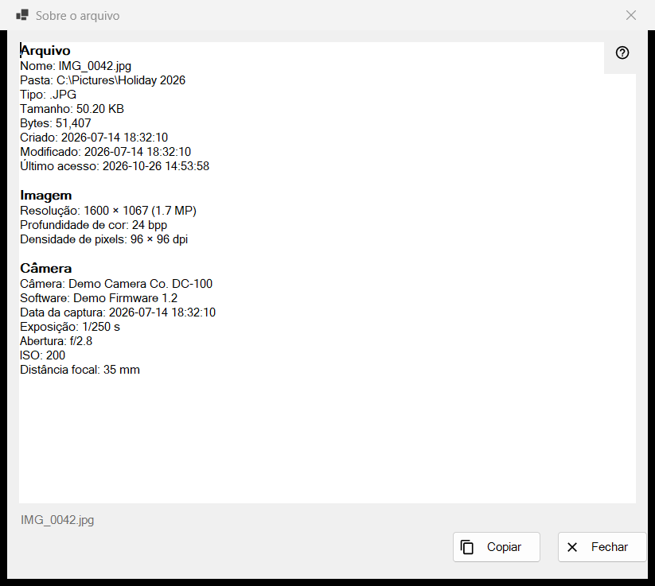
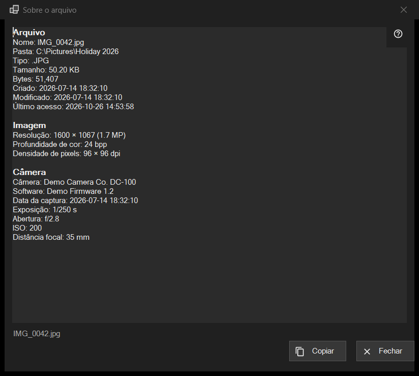

Sobre o arquivo
Finalidade
Um instantâneo somente de leitura do que o programa sabe sobre o arquivo na tela: o próprio arquivo, uma imagem com os dados da câmera, um documento e as faixas de áudio e vídeo. Abre-se pelo item i do primeiro painel, ou por Sobre o arquivo no bloco de arquivo dos menus do visualizador, e descreve o arquivo como ele estava no momento do clique.


Nesta ordem
- Mostre um arquivo no visualizador.
- Clique no item i do primeiro painel, ou escolha Sobre o arquivo no menu.
- Aguarde um momento: a linha de estado diz Lendo os metadados do arquivo.. e as linhas vão sendo preenchidas.
- Leia os blocos, selecione o que precisar e pressione Copiar para colocar todo o texto na área de transferência.
- Pressione Fechar ou Esc.
Os elementos
Arquivo
Todo arquivo tem este bloco: Nome, Pasta, Tipo, Tamanho, Bytes, Criado, Modificado, Último acesso e Atributos. Uma linha sem nada para mostrar é omitida. Se nenhum arquivo estiver aberto, a linha de estado diz Nenhum arquivo selecionado; uma cópia temporária de um arquivo compactado, um endereço remoto ou um arquivo que desapareceu dá O arquivo não está disponível, e nenhuma janela se abre.
Imagem
Para uma imagem: Resolução como exibida (uma foto de celular gravada de lado é lida no tamanho em pé), Profundidade de cor e Densidade de pixels, quando o arquivo os registra.
Câmera
Lido dos dados EXIF da foto: Câmera, Software, Data da captura, Exposição, Abertura, ISO, Distância focal e Autor. As coordenadas aparecem apenas se a foto tiver dados de GPS, e Copiar as inclui; por isso, confira o texto antes de compartilhá-lo.
Documento
Para um arquivo de texto: Linhas, Palavras, Caracteres e Codificação, mais O arquivo foi lido apenas parcialmente quando ele é grande demais para ser lido por inteiro. Para um e-book: Nome e Autor. Para um PDF: Páginas.
Mídia, Vídeo e Áudio
Para arquivos de áudio e vídeo, as etiquetas (Nome, Artista, Álbum, Ano, Faixa, Gênero, Diretor, Série, Temporada, Episódio, Duração) e a primeira faixa de cada tipo (Vídeo: Resolução, Quadros por segundo, Codec, Taxa de bits; Áudio: Codec, Canais, Taxa de amostragem, Taxa de bits) são acrescentadas um instante depois do resto, quando o mecanismo de mídia termina de ler. A janela nunca espera por isso. Transmissões de rede não têm linhas de faixas.
Copiar e Fechar
Copiar coloca todo o texto na área de transferência e a linha de estado diz Copiado para a área de transferência; se outro programa estiver com a área de transferência ocupada, ela avisa e você pode pressionar Copiar de novo. Uma seleção copiada com Ctrl+C também funciona. Se nada pôde ser lido, a caixa diz Não foi possível ler as informações do ficheiro. Ao lado dos botões, a linha de estado mostra o nome do arquivo. Passar para outro arquivo não altera esta janela: clique em i de novo para o novo arquivo.